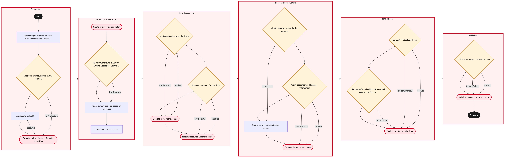

Updated 2026-08-21
Turnaround Plan and Gate Assignment
Process flow
Click to zoom

Process steps
▼
Phase 1 — Preparation
4 steps
| Step | Activity | Role | System | Input | Output | KPI | Dec | Exc | Pain point |
|---|---|---|---|---|---|---|---|---|---|
| 1.1 | Receive flight information from Ground Operations Control Duty Manager | Ground Operations Control Duty Manager | CUPPSC | Flight schedule, passenger count, and special requests | Updated flight plan | Time to receive and process flight info < 5 minutes | N | N | Delays in receiving flight information can disrupt the entire turnaround process. |
| 1.2 | Check for available gates at YYZ Terminal | Gate Management Analyst | Amadeus Altea DCSA | Flight plan and current gate status | List of available gates | Available gates identified within 3 minutes | Y | N | Limited availability of gates during peak hours. |
| 1.3 | Assign gate to flight | Gate Management Analyst | Amadeus Altea DCSA | Flight plan and list of available gates | Assigned gate number | Gate assignment completed within 2 minutes | N | N | Incorrect or delayed gate assignments can cause significant delays. |
| 1.4 | Escalate to Duty Manager for gate allocation | YYZ Operations Control Duty Manager | Amadeus Altea DCSA | Flight plan and gate availability status | Allocated gate number | Gate allocation decision within 5 minutes | N | Y | Manual intervention required to resolve gate allocation issues. |
▼
Phase 2 — Turnaround Plan Creation
4 steps
| Step | Activity | Role | System | Input | Output | KPI | Dec | Exc | Pain point |
|---|---|---|---|---|---|---|---|---|---|
| 2.1 | Create initial turnaround plan | Turnaround Planning Analyst | Amadeus Altea DCSA | Flight schedule and assigned gate | Draft turnaround plan | Initial plan created within 4 minutes | N | Y | Complexity in creating plans for multiple flights simultaneously. |
| 2.2 | Review turnaround plan with Ground Operations Control Duty Manager | Ground Operations Control Duty Manager | Amadeus Altea DCSA | Draft turnaround plan | Approved or revised turnaround plan | Plan review completed within 3 minutes | Y | N | Inconsistent communication between planners and duty managers can delay plans. |
| 2.3 | Revise turnaround plan based on feedback | Turnaround Planning Analyst | Amadeus Altea DCSA | Feedback from Ground Operations Control Duty Manager | Revised turnaround plan | Plan revision completed within 1 minute | N | N | Frequent revisions require constant updates to the system. |
| 2.4 | Finalize turnaround plan | Turnaround Planning Analyst | Amadeus Altea DCSA | Revised turnaround plan | Finalized turnaround plan | Plan finalization completed within 2 minutes | N | N | Errors in final plans can lead to operational disruptions. |
▼
Phase 3 — Gate Assignment
4 steps
| Step | Activity | Role | System | Input | Output | KPI | Dec | Exc | Pain point |
|---|---|---|---|---|---|---|---|---|---|
| 3.1 | Assign ground crew to the flight | Ground Operations Control Duty Manager | Amadeus Altea DCSA | Finalized turnaround plan | Assigned ground crew members | Crew assignment completed within 2 minutes | Y | N | Inadequate staffing can impact turnaround efficiency. |
| 3.2 | Allocate resources for the flight | Resource Allocation Analyst | Amadeus Altea DCSA | Finalized turnaround plan and crew assignments | Allocated resources | Resource allocation completed within 3 minutes | Y | N | Inaccurate resource allocation can lead to delays. |
| 3.3 | Escalate crew staffing issue | YYZ Operations Control Duty Manager | Amadeus Altea DCSA | Finalized turnaround plan and staffing concerns | Staffing solution | Crew staffing resolution within 5 minutes | N | Y | Manual intervention required to resolve staffing issues. |
| 3.4 | Escalate resource allocation issue | Resource Allocation Analyst | Amadeus Altea DCSA | Finalized turnaround plan and resource concerns | Resource solution | Resource allocation resolution within 5 minutes | N | Y | Manual intervention required to resolve resource issues. |
▼
Phase 4 — Baggage Reconciliation
4 steps
| Step | Activity | Role | System | Input | Output | KPI | Dec | Exc | Pain point |
|---|---|---|---|---|---|---|---|---|---|
| 4.1 | Initiate baggage reconciliation process | Baggage Compliance Agent | Baggage Reconciliation SystemC | Flight schedule and passenger manifest | Baggage reconciliation report | Reconciliation completed within 5 minutes | Y | N | Missing or misrouted bags can cause significant delays. |
| 4.2 | Verify passenger and baggage information | Baggage Compliance Agent | Baggage Reconciliation SystemC | Reconciliation report | Verified passenger and baggage data | Verification completed within 2 minutes | Y | N | Incorrect data can lead to operational issues. |
| 4.3 | Resolve errors in reconciliation report | Baggage Compliance Agent | Baggage Reconciliation SystemC | Reconciliation report and passenger manifest | Corrected reconciliation report | Error resolution completed within 2 minutes | N | N | Frequent corrections require constant updates to the system. |
| 4.4 | Escalate data mismatch issue | Baggage Compliance Agent | Baggage Reconciliation SystemC | Reconciliation report and passenger manifest | Corrected data | Data correction within 5 minutes | N | Y | Manual intervention required to resolve data issues. |
▼
Phase 5 — Final Checks
3 steps
| Step | Activity | Role | System | Input | Output | KPI | Dec | Exc | Pain point |
|---|---|---|---|---|---|---|---|---|---|
| 5.1 | Conduct final safety checks | Safety Inspector | Amadeus Altea DCSA | Finalized turnaround plan and resource allocations | Safety checklist completion | Checklist completed within 3 minutes | Y | N | Missing or incorrect items can lead to delays. |
| 5.2 | Review safety checklist with Ground Operations Control Duty Manager | Ground Operations Control Duty Manager | Amadeus Altea DCSA | Safety checklist completion | Approved or revised safety checklist | Checklist review completed within 2 minutes | Y | N | Inconsistent communication between inspectors and duty managers can delay plans. |
| 5.3 | Escalate safety checklist issue | YYZ Operations Control Duty Manager | Amadeus Altea DCSA | Safety checklist completion and concerns | Safety solution | Safety resolution within 5 minutes | N | Y | Manual intervention required to resolve safety issues. |
▼
Phase 6 — Execution
2 steps
| Step | Activity | Role | System | Input | Output | KPI | Dec | Exc | Pain point |
|---|---|---|---|---|---|---|---|---|---|
| 6.1 | Initiate passenger check-in process | Aeroplan Member Services Agent | Amadeus Altea DCSA | Finalized turnaround plan and passenger manifest | Completed check-in records | Check-in completed within 4 minutes per passenger | Y | N | Manual check-ins during system outages are time-consuming. |
| 6.2 | Switch to manual check-in process | Aeroplan Member Services Agent | Amadeus Altea DCSA | Finalized turnaround plan and passenger manifest | Completed manual check-in records | Manual check-in completed within 5 minutes per passenger | N | Y | Manual processes are slower and more error-prone. |
Swim lanes
Ground Operations Control Duty Manager1.1 2.2 3.1 5.2
Gate Management Analyst1.2 1.3
YYZ Operations Control Duty Manager1.4 3.3 5.3
Turnaround Planning Analyst2.1 2.3 2.4
Resource Allocation Analyst3.2 3.4
Baggage Compliance Agent4.1 4.2 4.3 4.4
Safety Inspector5.1
Aeroplan Member Services Agent6.1 6.2
Systems touched
CUPPSCAmadeus Altea DCSABaggage Reconciliation SystemC
Key performance indicators
- Gate assignment completed within 2 minutes
- Turnaround plan finalized within 8 minutes
- Baggage reconciliation completed within 7 minutes
- Safety checklist reviewed within 5 minutes
- Check-in process completed within 9 minutes per passenger
Risks and control points
- Amadeus Altea DCS system outages can disrupt gate assignments and check-ins.
- Inconsistent communication between duty managers and planners can delay turnaround plans.
- Manual interventions required to resolve staffing, resource, and safety issues can increase turnaround times.
- Errors in final plans can lead to operational disruptions.
- Missing or misrouted bags can cause significant delays.
Air Canada Process Wiki — process and systems reference compiled from public sources
for IT Application Management and User Support pre-sales discovery.
Built 2026-08-21. Every system carries an evidence tier: tier C is an industry pattern and tier U is an open
question, and neither should be asserted as fact about Air Canada without confirmation in discovery.
Not affiliated with or endorsed by Air Canada. Air Canada, Aeroplan and Altitude are trademarks of Air Canada.